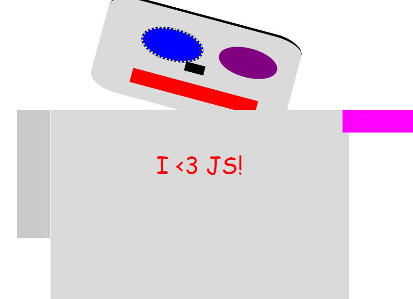
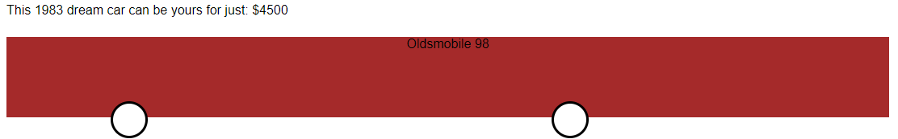

Links to some of the great work I have done
HTML, CSS, and JavaScript are a great team. Each piece works with the other two to make great things happen in web browsers.
In this chapter, you learn about the different types of operands and you see examples of how to work with operands in JavaScript programs
The program will be a Super‐Calculator — it can work with words and letters as well as numbers.

we look at one of the most popular types of loops in JavaScript: the for loop. We use for loops to create our own weather forecasting app.